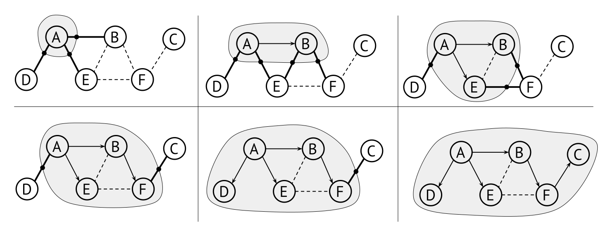
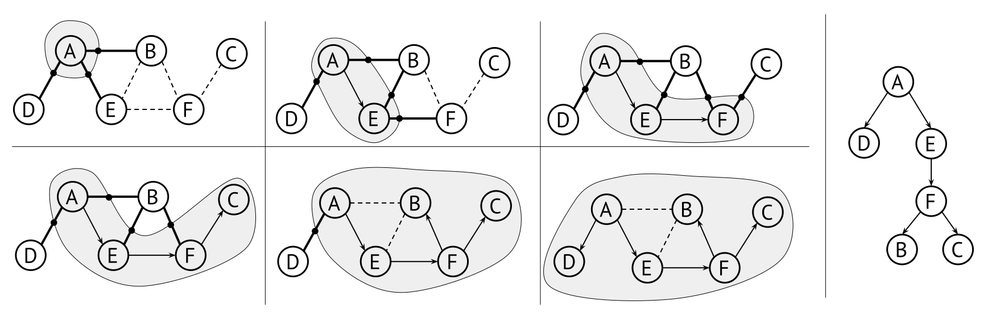
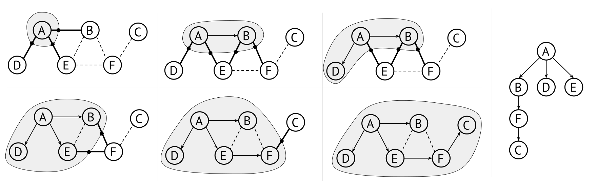

12.2 Traversing graphs: DFS and BFS
Many graph algorithms involve traversing a graph, starting from a given vertex and visit each reachable vertex once. This is similar to tree traversal, but made more difficult by the presence of cycles. A simple recursive procedure would get stuck in an infinite loop.
Instead we use an iterative procedure, very similar to the ones shown for trees in Section 9.1.3, but we have to keep track of visited vertices to avoid infinite loops. Thus, in each step of the traversal: Select an edge from a visited vertex to an unvisited vertex, and visit that vertex. Stop when there are no edges from visited to unvisited vertices.
By varying how we select the next edge, and what we do when we visit a vertex, we can implement a wide range of useful algorithms on graphs. Most of the algorithms described in this chapter use three data structures: an agenda, a visitation set, and a result.
- The agenda is the collection of edges we have discovered but not yet traversed. Different algorithms use different kind of agendas, and this is the main tool to distinguish different ways of traversing the graph.
- The visitation set is the set of vertices we have already visited, and that should not be visited again.
- The result can be anything that the algorithm builds while traversing the graph, but here we assume that it is a set of the edges that it has processed.

Algorithm: Generic graph traversal
To traverse a graph from a starting vertex s, we first create an empty set of visited vertices and the result set. Initialise the agenda with a single a dummy edge ?\rightarrow s (that is, going from something unspecified to the starting vertex), then repeat the following until the agenda is empty:
- Remove an edge a\rightarrow b from the agenda
- If b is not in visited:
- Add b to visited, and the edge to the result
- Add all outgoing edges of b that do not end in a visited vertex, to the agenda
Figure 12.2 illustrates how a graph traversal can unfold. It shows a useful trick when trying to understand graph traversal algorithms on pen and paper: Circle the visited vertices, and the edges you cross will be the important parts of the agenda.
The result of the traversal is a set of directed edges. Importantly, these edges do not form a single path – instead they form a spanning tree of all paths reachable from the starting vertex. You can see the resulting spanning tree in the lower right of Figure 12.2, the selected edges form a tree with A as the root.
Note that the algorithm does not specify in which order we select vertices. In particular, it does not necessarily select a vertex adjacent to the previous vertex we visited, but rather skip around to vertices that are adjacent to some visited vertex.
There are some things to note about this very abstract algorithm:
To get the process rolling, we add a fake edge to the agenda, leading to the starting vertex s. Its only purpose is to start the whole process: the first thing the loop does is to visit the starting vertex.
The agenda does not only contain edges from visited vertices to unvisited ones. Sometimes it will contain edges between two visited vertices, which is why we need to check that b is not visited.
It is a bit silly to add an edge to the agenda if its destination vertex is already visited, since it will anyway be filtered out in the visitation check. For example, the graph in Figure 12.2 is undirected, so when we have removed the edge a\rightarrow b from the agenda, it would be very silly to immediately add the reverse edge b\rightarrow a to the agenda.
This is why we have the additional check in the last line (the boldfaced text “…that do not end in a visited vertex”), which is a simple and often very effective optimisation. But note that it does not let us remove the original visitation check in the while loop.
The traversal algorithm can be translated into pseudocode like this:
traverse(start):
visited = new empty set of vertices
result = new empty set of edges
agenda = [(null,start)] // We do not specify which ADT we use for the agenda
while agenda is not empty:
(a,b) = agenda.remove()
if not visited.contains(b):
visited.add(b) // Visiting the vertex b for the first time
for each (b0,c) in outgoingEdges(b): // b0 is the same vertex as b
if not visited.contains(c):
agenda.add((b0,c))
return result12.2.1 Depth-first traversal
To turn this high level description of the algorithm into an efficient procedure, we need to decide how to represent the agenda. If we use a stack for the agenda we will get a depth-first traversal, similar to how one can implement DFS for trees (see Section 9.1.3).
The edges selected and the order in which vertices are visited depend
on the order in which outgoingEdges produces edges. Let us
assume that outgoingEdges gives edges in albethical order
of their destination, meaning that \texttt{outgoingEdges}(A) returns [A\rightarrow B, A\rightarrow D, A\rightarrow
E]. Then the vertices would be visited in this order: [A,E,F,C,B,D]. This is far from obvious, so
let us walk through the steps of depth-first traversing the graph:
| edge | visited | agenda at end of iteration |
|---|---|---|
| {\,?\,}\rightarrow A | \{A\} | [A\rightarrow B, A\rightarrow D, A\rightarrow E] |
| A\rightarrow E | \{A,E\} | [A\rightarrow B, A\rightarrow D, E\rightarrow B, E\rightarrow F] |
| E\rightarrow F | \{A,E,F\} | [A\rightarrow B, A\rightarrow D, E\rightarrow B, F\rightarrow B, F\rightarrow C] |
| F\rightarrow C | \{A,E,F,C\} | [A\rightarrow B, A\rightarrow D, E\rightarrow B, F\rightarrow B] |
| F\rightarrow B | \{A,E,F,C,B\} | [A\rightarrow B, A\rightarrow D, E\rightarrow B] |
| A\rightarrow D | \{A,E,F,C,B,D\} | [A\rightarrow B] |
Keep in mind how a stack operates: Because E is the last edge in \texttt{outgoingEdges}(A), it will be pushed last and be on top of the agenda after visiting A. Also note how after visiting F, there are three edges leading to B in the agenda. Because our agenda is a stack, the last one to be pushed is the one selected, the others are discarded. This is what makes the algorithm depth-first: it will tend to select vertices that are deeper in the sense that the constructed paths from the origin are longer. So one way of describing depth-first graph traversal is: In each step, we select an edge from the vertex that was most recently visited and still has at least one unvisited adjacent vertex. You can see the same depth-first traversal in Figure 12.3.

Variants
The algorithm above produces a set of result edges. In many cases this is exactly what we need, but sometimes we can make some some variants, depending on what we want to use the result for. Here are some examples:
- If we only want to find a path from s to a known goal vertex, we can stop immidately when we reach the goal, we do not have to continue traversing the whole graph.
- If we only want to know which vertices are reachable from s, we do not need to track edges used at all: we can keep vertices in the agenda, and use the visited set as our result.
As already discussed for trees in Section 9.1.3, DFS can also be implemented using recursion instead of an agenda. In this way the recursion call stack acts as an implicit agenda. Instead of pushing an edge to the agenda, we simply call the DFS function recursively with the edge as argument. But note that we still need to check for visited vertices, and this visitation set needs to be another argument to the function. We leave the recursive DFS implementation as an exercise to the reader.
12.2.2 Breadth-first traversal
By changing the data type of the agenda from a stack to a queue, we get an even more useful algorithm. The only change is the type of the agenda, the rest is exactly the same. Again, let us look at the execution of BFS from vertex A:
| edge | visited | agenda at end of iteration |
|---|---|---|
| {\,?\,}\rightarrow A | \{A\} | [A\rightarrow B, A\rightarrow D, A\rightarrow E] |
| A\rightarrow B | \{A,B\} | [A\rightarrow D, A\rightarrow E, B\rightarrow E, B\rightarrow F] |
| A\rightarrow D | \{A,B,D\} | [A\rightarrow E, B\rightarrow E, B\rightarrow F] |
| A\rightarrow E | \{A,B,D,E\} | [B\rightarrow E, B\rightarrow F, E\rightarrow F] |
| B\rightarrow F | \{A,B,D,E,F\} | [E\rightarrow F, F\rightarrow C] |
| F\rightarrow C | \{A,B,D,E,F,C\} | [] |
You may notice the following pattern: The algorithm starts by
visiting all vertices directly adjecent to A, then the vertices adjacent to those
vertices, etc. This is not only for this graph, but for every graph, and
regardless of the order in which edges are presented by
outgoingEdges. Consider: After visiting A, its immediate neighbors will all be in the
agenda and visited before anything else (because the agenda is a queue
now). After all those are visited, the agenda will have all the vertices
that are two steps away from A, and
after all those, three steps. The different steps are visualised in Figure 12.4. Breadth-first order will
always visit vertices in order of their minimal distance from the
starting vertex.

This further means that the tree produced will not only contain a path from A to C, but that path is guaranteed to be the shortest possible one. In fact, the tree contains shortest paths from A to all other vertices. This is supremely useful in a wide range of applications: Obviously things like pathfinding in maps or simulations, but also in applications like AI problem solving and most types of optimisation problems.